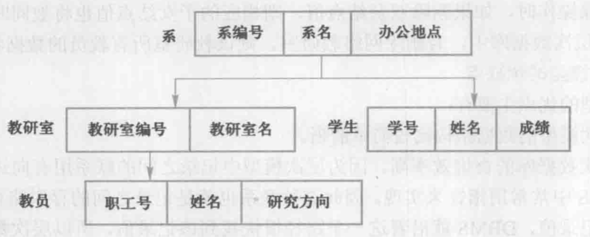
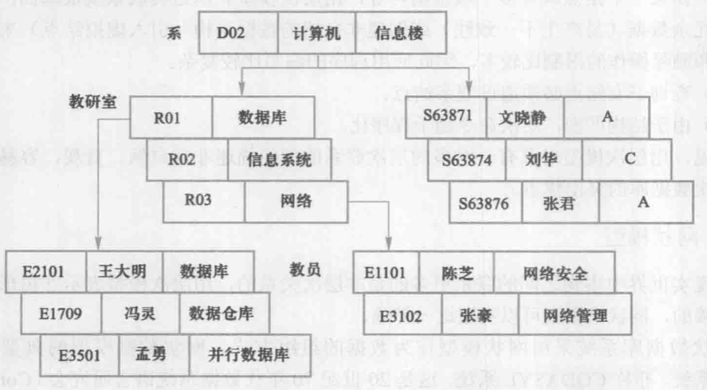
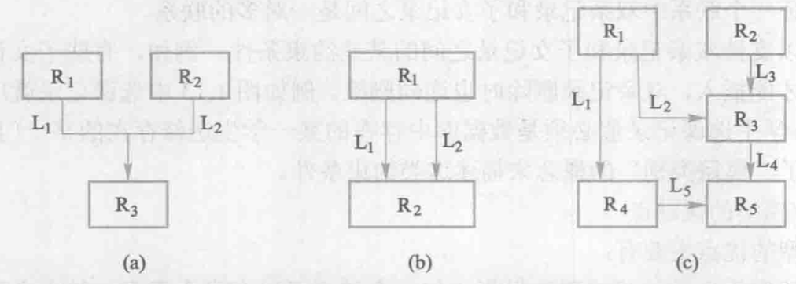
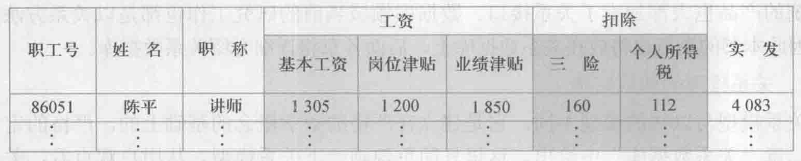

2023.01.13
我的理解
柏拉图提出了“理念”的观点，数据模型也是一种“理念”，是对现实世界数据特征的抽象。数据模型就是现实世界的模拟。
第一类——概念模型/信息模型
第二类——逻辑与物理模型
信息世界中的基本概念
实体：客观存在并可以相互区别的事物
属性：实体具有的某一特征
码：唯一表示实体属性集
实体型：实体名+一堆属性
eg：学生（学号，姓名，性别，...）
实体集：同一类型的实体的集合
联系：实体之间的联系通常指不同实体集之间的联系
概念模型的一种表示方法：实体—联系方法
结构化模型
关系模型
面向对象数据模型
对象关系数据模型
半结构化数据模型
用树形结构表示各类实体以及实体间的联系
比如：行政机构，家族关系
结构简单，查询效率高，良好的完整性支持
案例：


特点：
存储
两个特征
案例

网状模型的操作，其中查询是“导航式查询”
完整性约束条件不像层次模型一样严格，允许插入尚未确定双亲的子女节点值，允许之删除双亲节点值，但现实中具体的网状数据库会添加自己的约束条件。
关系的每一个分量必须是一个不可分的数据项——不允许表中有表(下图)

数据操作是集合操作（网状的是单记录操作），所有的操作对象和操作结果都是关系；存取路径对用户隐蔽，用户不用指明怎么做(网状需要提供路径)
存储结构：实体与实体的联系用表来表示，表以文件形式存储
完整性约束